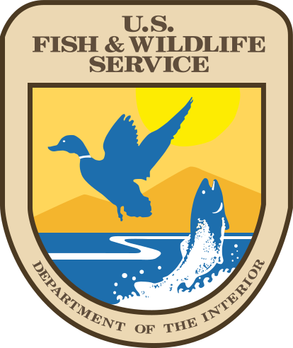

U.S. Fish & Wildlife Service
National Wildlife Refuge System
Home
About
History
Mission and Guiding Principles
FAQ and Fact Sheets
Fun on Wildlife Refuges
Field Notes
Refuge Reports
Conservation Heroes
Multimedia
Careers
Archives
Land
Realty Activities
Federal Duck Stamp
Small Wetlands Program
Annual Lands Report
Recent Refuges
GIS Data
Regional and Other Agency Programs
FAQ
Planning
Landscape Conservation Design
Comprehensive Conservation Plans (CCPs)
Strategic Growth
Climate Change Planning
Refuge Planning Documents
Visitors
Special Events
Hunting
Fishing
Birding
Photography
Observation/Cultural Resources/Trails
Education/Interpretation
Kids
Permits and Passes
Law Enforcement
Wildlife & Habitat Management
Habitat
Wilderness and Special Places
Endangered Species
Coastal and Marine Resources
Migratory Birds
Oil and Gas
Natural Resource Program Center
Invasive Species
Fire Management
Contaminants
Air Quality
Climate Change
Policies & Budget
Budget
Roads
Legislative Mandates
Federal Register
Policy and Directives Management
Service Manual
Challenge Cost Share Program
You Can Help
Friends
Volunteers
Partnerships